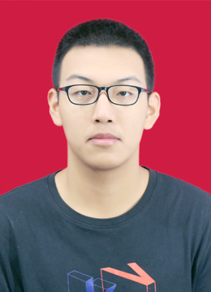

Gallery
学术生活影像
研究之外的瞬间——会议、旅行、和学生们的日常。


undergraduate student
I dedicate to explore the wide regions of advanced science, including but not limited to Cancer Neuroscience/Bioinformatics/Neurosurgery/LLM/AI Agent

一个相信好的研究应该既严谨又优雅的人。
我是 Alex Chen，目前在某大学计算机科学系担任副教授。 我的研究聚焦于自然语言处理与认知科学的交叉领域—— 具体来说，我着迷于一个问题：当大型语言模型"理解"一句话时，它和人类的理解方式有什么本质区别？
在过去十年里，我带领团队在语义理解、多模态推理和教育AI方向发表了一系列工作。 我相信技术最终要服务于人——我的课题组与教育学系合作开发的"自适应学习伴侣"项目， 目前已在30余所学校落地使用。
除了研究，我热爱徒步、古典音乐和亲手冲一杯好咖啡。 欢迎对以上任何话题感兴趣的同学与我联系。
点击节点，探索我的研究兴趣如何相互连接。（这可不是 ORCID 的关键词列表）
从本科到副教授——一路上的关键节点。
精选代表性工作。点击标签可按类型筛选。
用数字说话——但这些数字背后，是一个个具体的人和故事。
研究之外的瞬间——会议、旅行、和学生们的日常。
无论你是想读研的本科生、寻找合作的研究者，还是单纯对某个话题感兴趣的路人—— 都欢迎来聊聊。